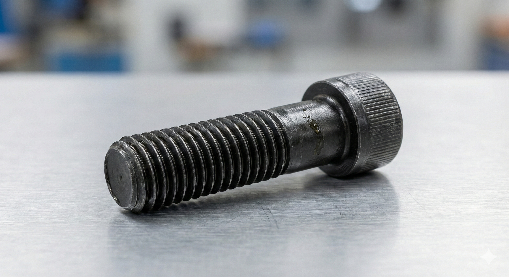
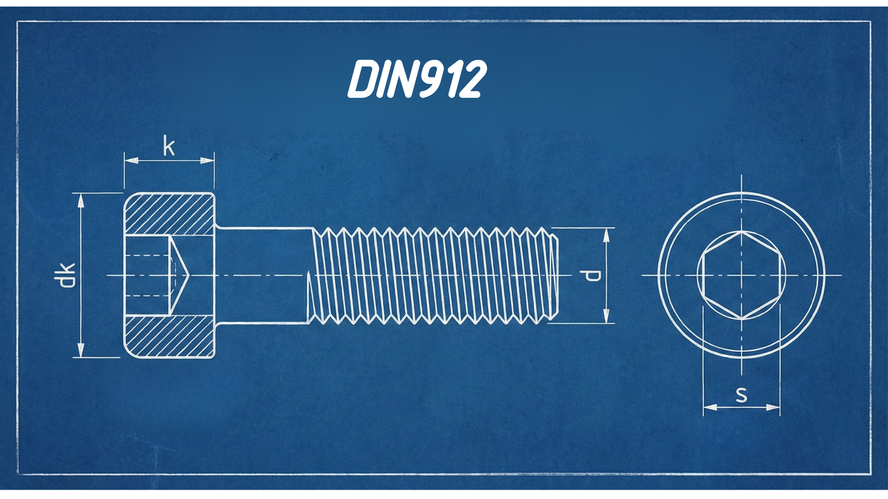

Dimensiones DIN 912: Tabla para diseño de alojamientos (Allen)
Publicado el 20 Febrero, 2026 • 3 min de lectura

El tornillo DIN 912 (ISO 4762) es el estándar en maquinaria industrial. Su cabeza cilíndrica permite grandes pares de apriete, pero requiere un diseño preciso del alojamiento o counterbore.
Identificación de cotas
Para diseñar correctamente, debemos fijarnos en el diámetro de la cabeza (dk) y su altura (k).

Tabla de Dimensiones (ISO 4762)
| Rosca (d) | Cabeza Ø (dk) | Altura (k) | Llave (s) |
|---|---|---|---|
| M3 | 5.5 mm | 3.0 mm | 2.5 |
| M4 | 7.0 mm | 4.0 mm | 3 |
| M5 | 8.5 mm | 5.0 mm | 4 |
| M6 | 10.0 mm | 6.0 mm | 5 |
| M8 | 13.0 mm | 8.0 mm | 6 |
| M10 | 16.0 mm | 10.0 mm | 8 |
| M12 | 18.0 mm | 12.0 mm | 10 |
💡 El Consejo del Ingeniero
No diseñes el agujero al tamaño justo de la tabla. Aplica siempre una holgura de seguridad:
- Impresión 3D: dk + 0.6mm mínimo.
- Mecanizado: dk + 1.0mm para permitir la entrada de la herramienta.
¿Necesitas optimizar tus diseños CAD?
Revisamos tus tolerancias para asegurar un montaje perfecto.
Consultar con un experto